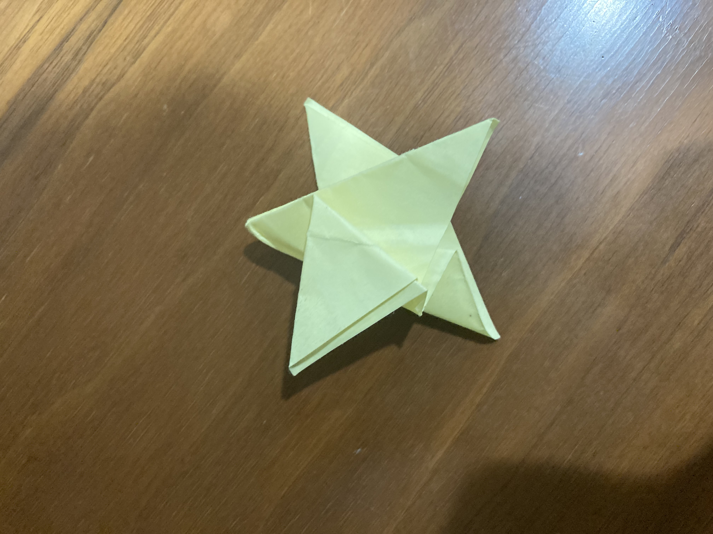
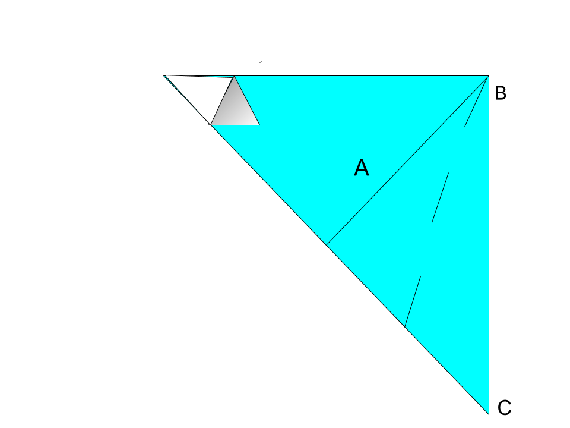
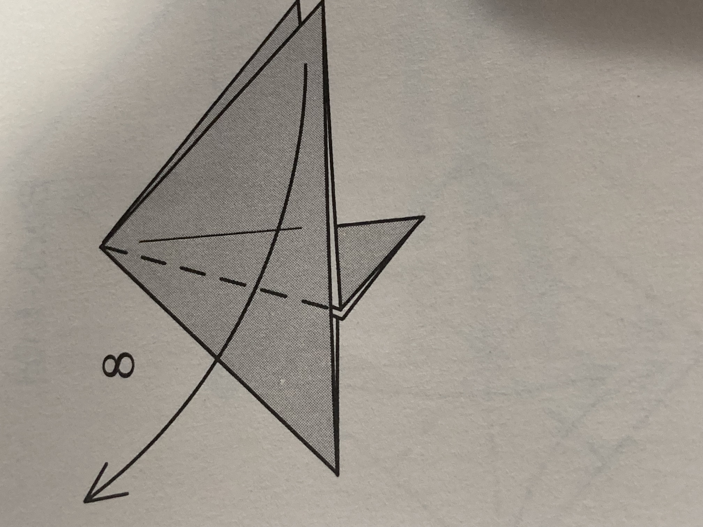

Origami Star(intermediate)

step 1. Take a piece of paper white side up and turn it 90 degrees to make a diamond shape and fold it in half downwards to make an upside down triangle.
step 2. Take the top left and right corners and fold them to the middle bottom point to make a diamond, now crease.
step 3. Unfold the folds you did in step 2.
step 4. Fold the top right corener to the top left corner.
step 5. Fold line A to line B-C.(fold along the dotted line)

step 6. fold the flap that is now visible behind the flap you just made.
step 7. pull out the paper that is inside the left flap
step 8. Fold according to the diagram.

step 9. fold the top left flap(the one you just created) down to the bottom right point
step 10. fold up that same flap but not completely
step 11. repeat steps 9 and 10 behind